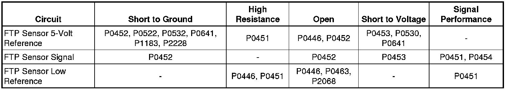
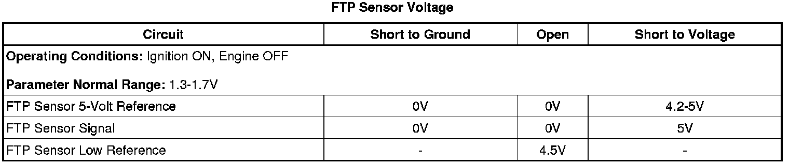

P0454
DTC P0451, P0452, P0453, or P0454
Diagnostic Instructions
* Perform the Diagnostic System Check - Vehicle (Initial Inspection and Diagnostic Overview) prior to using this diagnostic procedure.
* Review Strategy Based Diagnosis (Initial Inspection and Diagnostic Overview) for an overview of the diagnostic approach.
* Diagnostic Procedure Instructions (Initial Inspection and Diagnostic Overview) provides an overview of each diagnostic category.
DTC Descriptors
DTC P0451
- Fuel Tank Pressure (FTP) Sensor Performance
DTC P0452
- Fuel Tank Pressure (FTP) Sensor Circuit Low Voltage
DTC P0453
- Fuel Tank Pressure (FTP) Sensor Circuit High Voltage
DTC P0454
- Fuel Tank Pressure (FTP) Sensor Intermittent
Diagnostic Fault Information

Typical Scan Tool Data

Circuit/System Description
The fuel tank pressure (FTP) sensor measures air pressure or vacuum in the evaporative emission (EVAP) system. The control module supplies a 5-volt reference and a low reference circuit to the FTP sensor. The FTP sensor signal voltage varies depending on EVAP system pressure or vacuum. The controller also uses this FTP signal to determine atmospheric pressure for use in the engine-off small leak test, DTC P0442. Before using this signal as an atmospheric reference it must first be re-zeroed.
Conditions for Running the DTC
P0451
* DTC P0451 runs only when the engine-off natural vacuum small leak test, P0442, executes.
* The number of times this test runs can range from 0-2 per engine-off period. The length of the test can be up to 10 minutes.
P0452 and P0453
DTC P0452 and P0453 run continuously when the ignition is ON.
P0454
* DTC P0454 runs only when the engine-off natural vacuum small leak test, P0442, executes.
* This test can run once per engine-off period. The length of the test can be up to 10 minutes.
* A refueling event is not detected.
Conditions for Setting the DTC
P0451
This DTC will set if the controller is unable to re-zero the FTP sensor voltage within a calibrated range during the engine-off small leak test, P0442.
P0452
The FTP sensor voltage is less than 0.1 volt for more than 5 seconds.
P0453
The FTP sensor voltage is more than 4.9 volts for more than 5 seconds.
P0454
If, during the engine-off natural vacuum small leak test, P0442, the engine control module (ECM) detects an abrupt FTP signal change, other than a refueling event, this DTC will set. An abrupt change is defined as a change of 1 inch H2O in the span of 1 second.
Action Taken When the DTC Sets
* DTCs P0451 and P0454 are Type A DTCs.
* DTCs P0452 and P0453 are Type B DTCs.
Conditions for Clearing the MIL/DTC
* DTCs P0451 and P0454 are Type A DTCs.
* DTCs P0452 and P0453 are Type B DTCs.
Diagnostic Aids
P0451 and P0454
* A restriction in the EVAP canister or vent lines could prevent fuel vapor pressure from bleeding off fast enough. If the vent system cannot bleed off pressure fast enough, the re-zero procedure may not complete successfully, which could cause this code to set.
* Ensure that the reference port on the FTP sensor is unobstructed.
* An FTP sensor that is skewed or does not have a linear transition from low to high may cause this code to set. Scan tool output controls, snapshot, and plot functions can help detect erratic sensor response. To test the sensor signal under vacuum conditions, use the Quick Snapshot and the Purge/Seal functions to capture data while commanding purge to 20 percent, then plot the data to look for erratic sensor operation. A similar test can be done for the pressure side of the sensor operation by applying pressure with the J 41413-200 while taking a snapshot.
Reference Information
Schematic Reference
Engine Controls Schematics (Electrical Diagrams)
Connector End View Reference
Component Connector End Views (Connector Views)
Electrical Information Reference
* Circuit Testing (Component Tests and General Diagnostics)
* Connector Repairs (Component Tests and General Diagnostics)
* Testing for Intermittent Conditions and Poor Connections (Component Tests and General Diagnostics)
* Wiring Repairs (Component Tests and General Diagnostics)
DTC Type Reference
Powertrain Diagnostic Trouble Code (DTC) Type Definitions (Diagnostic Trouble Code Descriptions)
Scan Tool Reference
Control Module References (Programming and Relearning) for scan tool information
Special Tools
J 41413-200 Evaporative Emission System Tester (EEST)
Circuit/System Verification
1. Verify that DTC P0641 is not set.
• If P0641 is set, refer to Diagnostic Trouble Code (DTC) List - Vehicle (Diagnostic Trouble Code Descriptions) .
2. Remove the fuel cap.
3. Observe the Fuel Tank Pressure Sensor parameter with a scan tool.
4. The FTP Sensor parameter should be 1.3-1.7V.
Circuit/System Testing
Important: The Circuit/System Verification must be performed before proceeding with the Circuit/System Testing.
1. Ignition OFF, disconnect the harness connector at the FTP sensor.
2. Ignition OFF, test for less than 5 ohms of resistance between the low reference circuit terminal A and ground.
• If greater than the specified range, test the low reference circuit for an open/high resistance. If the circuit tests normal, replace the ECM.
3. Ignition ON, test for 4.8-5.2 volts between the 5-volt reference circuit terminal C and ground.
• If less than the specified range, test the 5-volt reference circuit for a short to ground or an open/high resistance. If the circuit tests normal, replace the ECM.
• If greater than the specified range, test the 5-volt reference circuit for a short to voltage. If the circuit tests normal, replace the ECM.
4. Verify the scan tool FTP sensor parameter is less than 0.2 volt.
• If greater than the specified range, test the signal circuit terminal B for a short to voltage. If the circuit tests normal, replace the ECM.
5. Install a 3A fused jumper wire between the signal circuit terminal B and the 5-volt reference circuit terminal C. Verify the scan tool FTP sensor parameter is greater than 4.7 volts.
• If less than the specified range, test the signal circuit for short to ground or an open/high resistance. If the circuit tests normal, replace the ECM.
6. If all circuits test normal, test or replace the FTP sensor.
Repair Instructions
For DTC P0452 or P0453, perform the Diagnostic Repair Verification (Verification Tests) after completing the diagnostic procedure. For DTC P0451 or P0454, clear the DTCs with a scan tool.
* Fuel Tank Pressure Sensor Replacement (Service and Repair)
* Control Module References (Programming and Relearning) for engine control module (ECM) replacement, setup, and programming